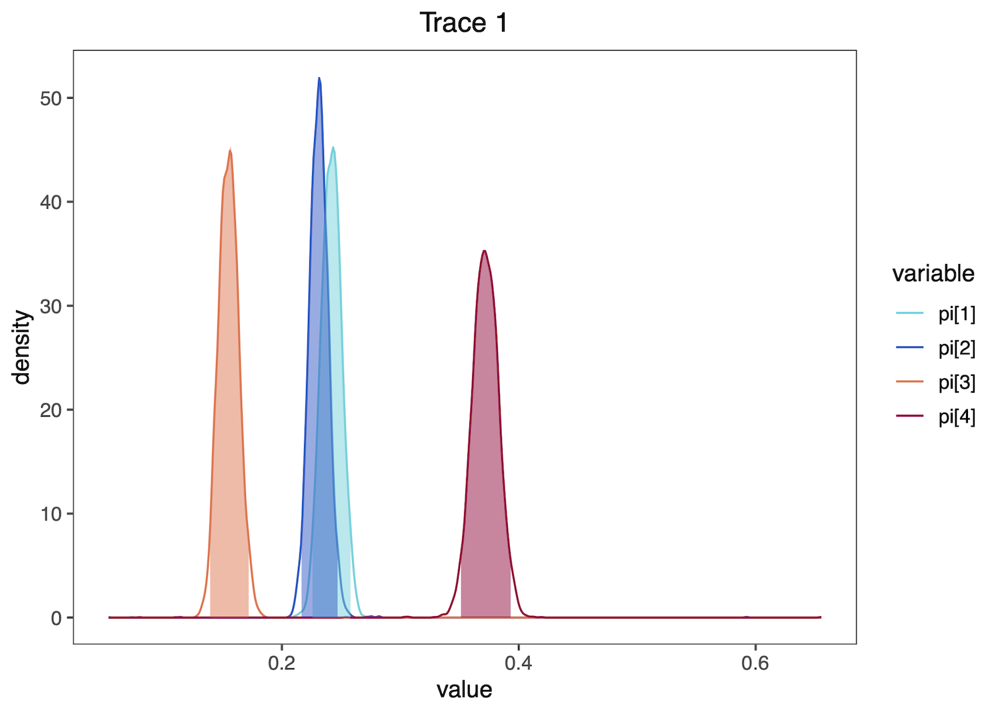
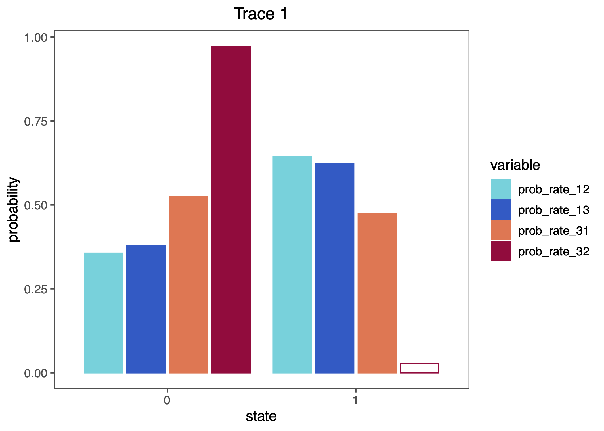
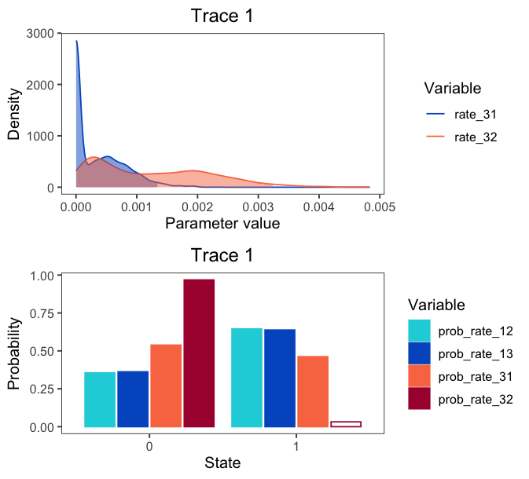
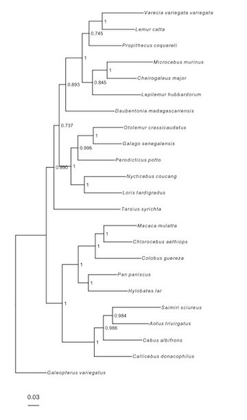
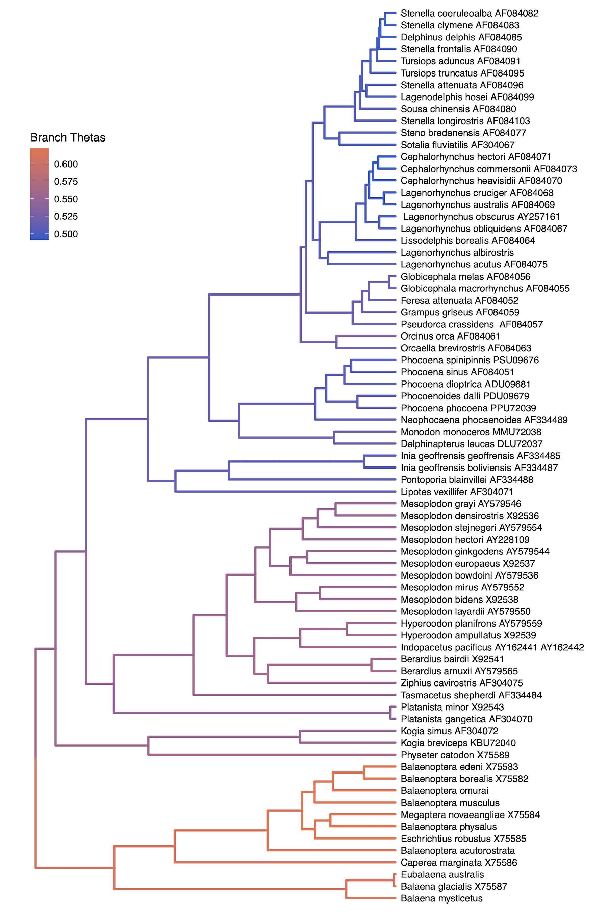
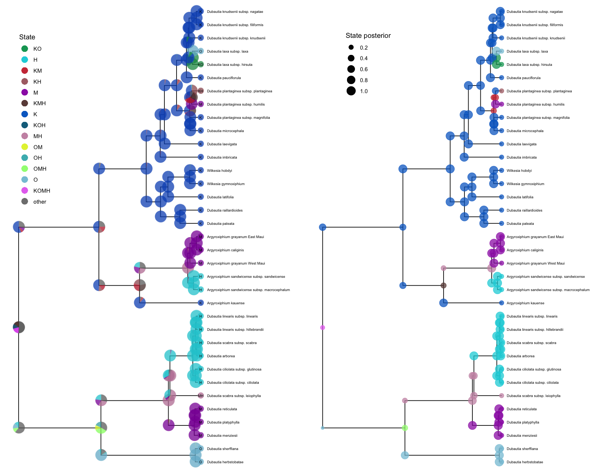
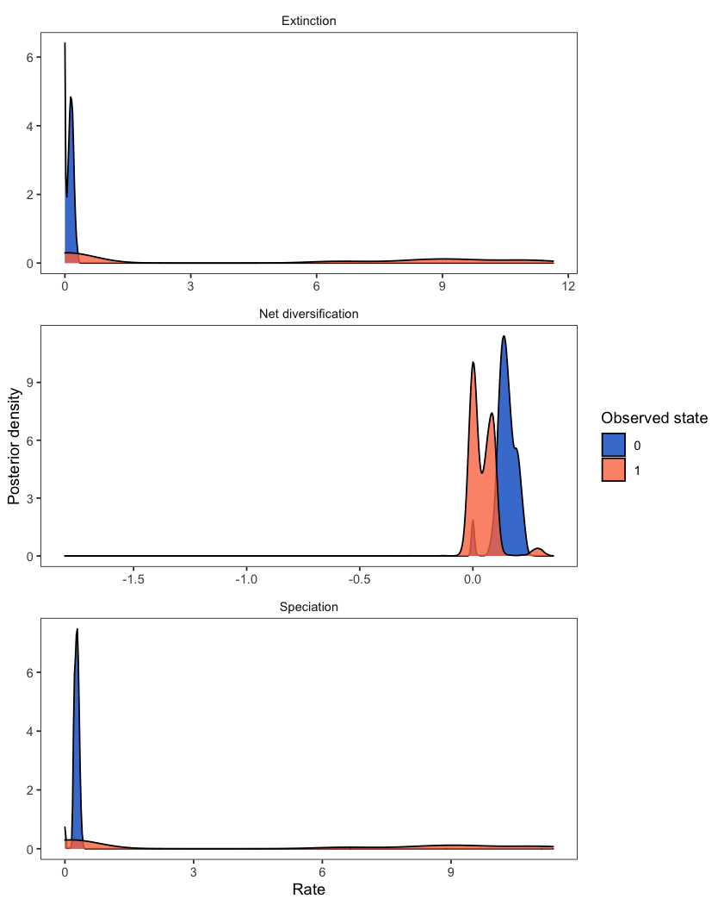
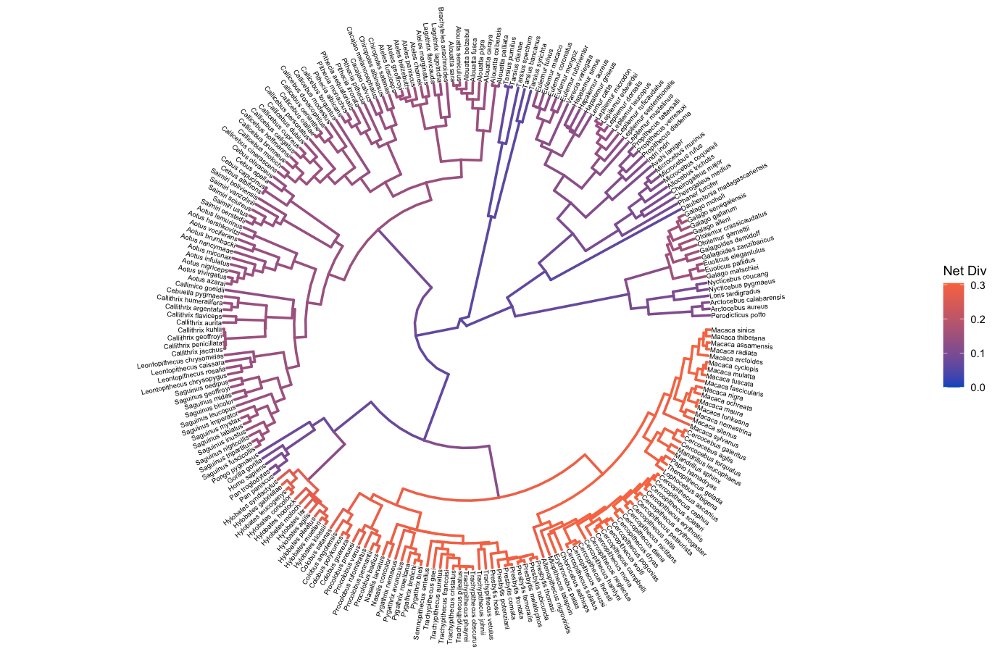
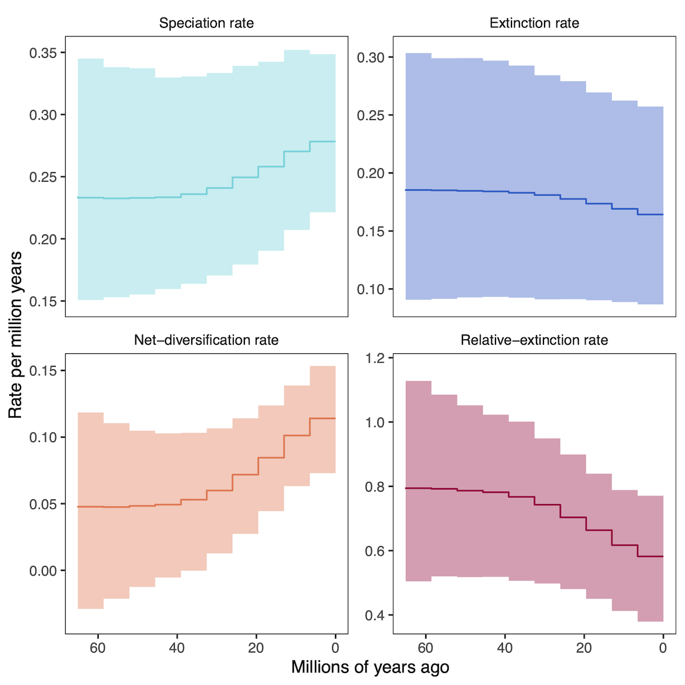
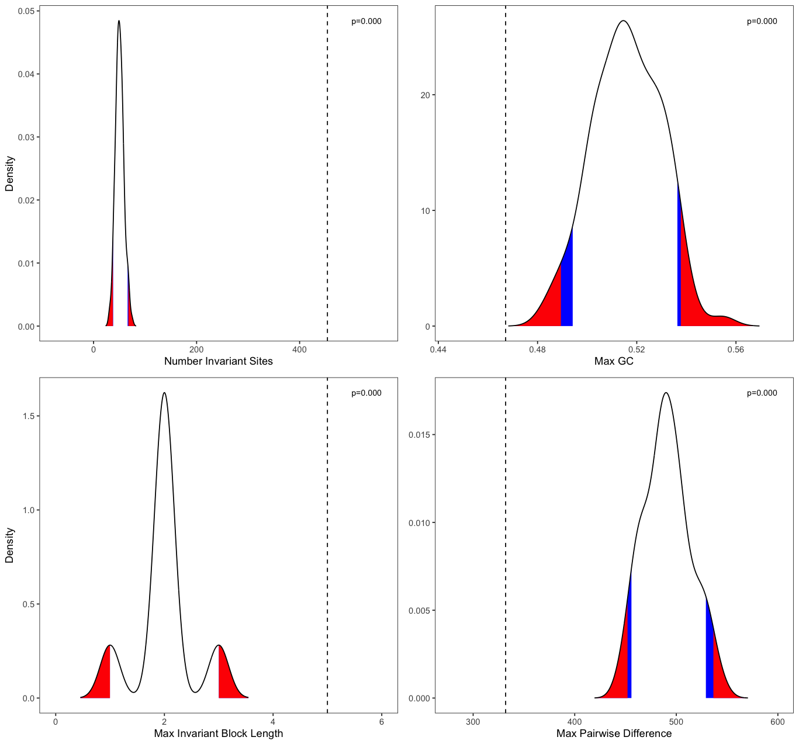

Overview 
Through user-friendly data pipelines, RevGadgets guides users through importing RevBayes output into R, processing the output, and producing figures or other summaries of the results.
RevGadgets provide paired processing and plotting functions built around commonly implemented analyses, such as tree building and divergence-time estimation, diversification-rate estimation, ancestral-state reconstruction and biogeographic range reconstruction, and posterior predictive simulations.
Using the general framework of ggplot2, the tidyverse, and associated packages (Wickham 2011; Wickham et al. 2019), plotting functions return plot objects with default aesthetics that users may customize. Below, we walk you through installation and several case studies to illustrate primary functionalities.
Installation
RevGadgets is available to download from GitHub using devtools:
install.packages("devtools")
devtools::install_github("cmt2/RevGadgets")
Note about magick dependency
RevGadgets depends on the R package magick, which in turn depends on external software ImageMagick. If RevGadgets installation fails, you may need to install ImageMagick. On macOS or Linux, this can be done using homebrew at the command line:
brew install imagemagick
Alternatively, visit the ImageMagick website for more download options.
⚙ RevGadgets is under active development
RevGadgets is still under active development. If you encounter any bugs or issues while using RevGadgets, please submit a bug report with Issues on GitHub.
We are currently transitioning our tutorials to the new RevGadgets, so you may notice inconsistencies between instructions here and in those tutorials. If you are using an existing tutorial, make sure you are using the RevGadgets version referenced in that tutorial. Older tutorials will use this older version of RevGadgets. Tutorials that use the new version of RevGadgets indicate this tutorial as a dependency.
Getting Started
To run this tutorial, download the associated files from the Data files and scripts menu, preserving the structure of the zipped folder. All scripts should be in a subdirectory called scripts and all data files in a subdirectory called data.
Open R and make sure your working directory is set to the directory with the downloaded files.
For more information on how to customize these plots, see the associated documentation for each function (e.g., ?readTrace)).
Before running the code chunks below, load all the libraries used in the tutorial. You may need to install these packages separately.
library(RevGadgets)
library(coda)
library(ggplot2)
library(ggtree)
library(grid)
library(gridExtra)
Visualizing Parameter Estimates
RevGadgets provides several tools that facilitate the visualization of posterior distributions of parameters.
The output of most RevBayes analyses is a tab-delimited file where rows correspond to samples of an MCMC analysis and columns correspond to parameters in the model.
Most information of interest to researchers must be extracted from these output files.
Visualizing MCMC output is also critical for evaluating and troubleshooting analyses, especially for diagnosing MCMC pathologies.
The following code demonstrates how to process and visualize the MCMC trace file of a general time-reversible (GTR) substitution model analysis (Tavaré 1986), in which we have estimated the substitution rate and stationary frequency parameters for a single gene in a sample of 23 primates (Springer et al. 2012). This analysis is covered in detail the Nucleotide substitution models tutorial.
⇨ The code in this section is contained in the script: scripts/parameter_estimates.R
First, read in and process the trace file. Burnin (the samples taken before the Markov chain reached stationarity) may be removed at this stage or after examining the trace file further.
# specify the input file
file <- "data/primates_cytb_GTR.log"
# read the trace and discard burnin
trace_quant <- readTrace(path = file, burnin = 0.1)
# or read the trace _then_ discard burnin
trace_quant <- readTrace(path = file, burnin = 0)
trace_quant <- removeBurnin(trace = trace_quant, burnin = 0.1)
The output of readTrace() may be passed to R packages specializing in MCMC diagnoses such as coda (Plummer et al. 2006). (Note that RevGadgets does not require coda, so you will have to install it separately.)
For example:
# assess convergence with coda
library(coda)
trace_quant_MCMC <- as.mcmc(trace_quant[[1]])
effectiveSize(trace_quant_MCMC)
traceplot(trace_quant_MCMC)
Alternatively, use the R package convenience (described here: Convergence assessment) to assess convergence before processing the data with RevGadgets.
RevGadgets provides its own core functions for summarizing and visualizing traces of specific parameters.
SummarizeTrace() calculates the mean and 95% credible interval for quantitative variables and the 95% credible set for qualitative variables.
To examine the stationary frequency (pi) parameter values in our trace file, summarize their distributions:
summarizeTrace(trace = trace_quant, vars = c("pi[1]","pi[2]","pi[3]","pi[4]"))
The following summaries will be printed to the screen:
$`pi[1]`
$`pi[1]`$trace_1
mean median MAP
0.3280593 0.3282250 0.3265728
quantile_2.5 quantile_97.5
0.3080363 0.3481651
...
$`pi[4]`
$`pi[4]`$trace_1
mean median MAP
0.2152190 0.2145595 0.2144797
quantile_2.5 quantile_97.5
0.2020019 0.2278689
Then plot these distributions. plotTrace() produces a list of ggplot2 objects, with multiple plots if there are multiple runs in the trace object or if you provide a mix of quantitative and qualitative parameters. Here, only one plot is produced, so we print the plot using [[1]] after the function call.
plotTrace(trace = trace_quant, vars = c("pi[1]","pi[2]","pi[3]","pi[4]"))[[1]]

These functions may also process and plot posterior estimates of discrete variables, such as the the binary character indicating if certain transition rates among character states exist (i.e. if the corresponding transitions are possible), from a reversible jump MCMC (rjMCMC) ancestral-state reconstruction analysis. See the Discrete morphology - Ancestral State Estimation tutorial for information on performing this RevBayes analysis.
First, read and summarize the data:
# read in trace
file <- "data/freeK_RJ.log"
trace_qual <- readTrace(path = file)
# summarize parameters
summarizeTrace(trace_qual,
vars = c("prob_rate_12", "prob_rate_13", "prob_rate_21",
"prob_rate_23", "prob_rate_31", "prob_rate_32"))
The following summaries will be printed to the screen:
$prob_rate_12
$prob_rate_12$trace_1
credible_set
1 0
0.6440396 0.3559604
...
$prob_rate_32
$prob_rate_32$trace_1
0
0.9724475
Then plot the distributions as histograms:
plotTrace(trace = trace_qual,
vars = c("prob_rate_12", "prob_rate_13",
"prob_rate_31", "prob_rate_32"))[[1]]

If you provide both quantitative and qualitative variables to the vars argument, plotTrace() will produce multiple plots. Say you want to visualize some rates in addition to the qualitative probability parameters:
# produce plots of probab
plots <- plotTrace(trace = trace_qual,
vars = c("prob_rate_12", "prob_rate_13",
"prob_rate_31", "prob_rate_32",
"rate_31", "rate_32"))
plots is now a list of length two. Visualize them together with the grid package:
grid.newpage()
grid.draw( # draw the following matrix of plots
rbind( # bind together the columns
ggplotGrob(plots[[1]]),
ggplotGrob(plots[[2]]))
)

Visualizing Phylogenies
Phylogenies are central to all analyses in RevBayes, and accurate and information-rich visualizations of evolutionary trees are thus critical.
RevGadgets contains methods to visualize phylogenies and their associated posterior probabilities, divergence time estimates, geological time scales, and branch rates.
Additionally, text annotation may be added to specify associated data, such as posterior probabilities of nodes or node ages.
Users may modify aesthetics such as colors, sizes, branch thickness, and tip label formatting through specific function arguments or by adding layers to the resulting ggplot object.
⇨ To reproduce this section, see: scripts/visualize_trees.R
Basic tree plots
RevGadgets reads and processes single trees, such as those produced by the Nucleotide substitution models tutorial, and tree traces with readTrees():
file <- "data/primates_cytb_GTR_MAP.tre"
tree <- readTrees(paths = file)
rerootPhylo() roots the tree and plotTree() produces a basic tree plot, which may be modified by changing the formatting of tip labels, adjusting tree line width, and adding posterior probabilities of nodes as internal node labels. This plot object is modifiable in the same way as ggplot. Here, we add a scale bar:
# reroot the tree with Galeopterus variegatus
# you can also specify multiple tips to reroot using a clade
tree_rooted <- rerootPhylo(tree = tree, outgroup = "Galeopterus_variegatus")
# create the plot of the rooted tree
plot <- plotTree(tree = tree_rooted,
# label nodes the with posterior probabilities
node_labels = "posterior",
# offset the node labels from the nodes
node_labels_offset = 0.005,
# make tree lines more narrow
line_width = 0.5,
# italicize tip labels
tip_labels_italics = TRUE)
# add scale bar to the tree and plot with ggtree
library(ggtree)
plot + geom_treescale(x = -0.35, y = -1)

Fossilized birth-death trees
RevGadgets elaborates on the plotTree to plot fossilized birth death analyses, such as those described in the Estimating a Time-Calibrated Phylogeny of Fossil and Extant Taxa using Morphological Data tutorial. This plot includes a geological timescale, labeled sampled ancestors along branches and their species names as annotated text in the top left corner, and node and tip age bars colored by their corresponding posterior probabilities.
file <- "data/bears.mcc.tre"
# read in the tree
tree <- readTrees(paths = file)
# plot the FBD tree
plotFBDTree(tree = tree,
timeline = T,
geo_units = "epochs",
tip_labels_italics = T,
tip_labels_remove_underscore = T,
tip_labels_size = 3,
tip_age_bars = T,
node_age_bars = T,
age_bars_colored_by = "posterior",
label_sampled_ancs = TRUE) +
# use ggplot2 to move the legend and make
# the legend background transparent
theme(legend.position=c(.05, .6),
legend.background = element_rect(fill="transparent"))

Coloring branches by variables
The plotTree() function can color the branches of the tree, which is useful for indicating branch rates or other continuous parameters. For example, here plotTree() colors the branches by branch-specific optima (thetas) from a relaxed Ornstein-Uhlenbeck model of body size evolution in whales. The Relaxed Ornstein-Uhlenbeck Models tutorial covers this type of analysis.
file <- "data/relaxed_OU_MAP.tre"
# read in the tree
tree <- readTrees(paths = file)
# plot the tree with rates
plotTree(tree = tree,
# italicize tip labels
tip_labels_italics = FALSE,
# specify variable to color branches
color_branch_by = "branch_thetas",
# thicken the tree lines
line_width = 1.7) +
# move the legend with ggplot2
theme(legend.position=c(.1, .9))

Ancestral-State Reconstruction
Ancestral state reconstruction methods allow users to model how heritable characters, such as phenotypes or geographical distributions, have evolved across a phylogeny, producing probability distributions of states for each node of the phylogeny.
This aspect of RevGadgets functionality allows users to plot the maximum a posteriori (MAP) estimate of ancestral states via plotAncStatesMAP() or a pie chart showing the most probable states via plotAncStatesPie().
For anagenetic evolutionary models (including standard CTMC models such as the GTR and Mk models), ancestral-state estimates are plotted at the nodes.
However, more complex models may include cladogenetic evolution, so that state changes can occur at speciation events in addition to anagenetic evolution along branches (Ree and Smith 2008; Goldberg and Igić 2012).
RevGadgets can plot the results of inferences for modes with cladogenetic events by plotting ancestral states on the “shoulders” as well as the nodes.
Ancestral-state plotting functions in RevGadgets allow users to specify character states and their posterior probabilities by modifying the colors, shapes, and sizes of node and shoulder symbols.
Text annotations may be added to specify states, state posterior probabilities, and the posterior probabilities of nodes.
⇨ To reproduce this section, see: scripts/anc_states.R
Standard (anagenetic) models
To plot the output of an ancestral state estimation of placenta type across mammals, RevGadgets first summarizes the RevBayes output file using processAncStates(). This function reads in and processes an annotated tree file and labels the states. If no state labels are provided to processAncStates(), the function will provide default labels. Next, RevGadgets creates the plot object using a plotting function. In this example, we plot the MAP states using plotAncStatesMAP(). The analysis that produced this output file is described in the Discrete morphology - Ancestral State Estimation tutorial.
file <- "data/ase_freeK.tree"
# process the ancestral states
freeK <- processAncStates(file,
# Specify state labels.
# These numbers correspond to
# your input data file.
state_labels = c("1" = "Epitheliochorial",
"2" = "Endotheliochorial",
"3" = "Hemochorial"))
# produce the plot object, showing MAP states at nodes.
# color corresponds to state, size to the state's posterior probability
plotAncStatesMAP(t = freeK,
tree_layout = "circular") +
# modify legend location using ggplot2
theme(legend.position = c(0.57,0.41))

Cladogenetic models
Many biogeographic models, including the popular Dispersal-Extirpation-Cladogenesis model described in Introduction to Phylogenetic Models of Discrete Biogeography, include cladogenetic change.
plotAncStatesPie() represents the distribution of ancestral states at nodes as pie charts of the three most probable states for that node plus an “other” category of any remaining probability.
We demonstrate this functionality with a visualization of the ancestral ranges of Hawaiian silverswords estimated using a DEC biogeographic analysis and include shoulder states to indicate cladogenetic as well as anagenetic changes.
Because of the large number of states in this analysis (15 possible ranges and one “other” category), more pre-plotting processing is necessary.
We pass the appropriate ancestral area names to processAncStates() and specify custom colors in a named vector.
To plot the ancestral states, we provide the processed data, specify that the corresponding model is “cladogenetic”, add text labels to the tips specifying the character state, and modify sizes and horizontal positions for aesthetics.
We also modify the order at which states appear in the legend and the legend position.
file <- "data/simple.ase.tre"
# Create the labels vector.
# This is a named vector where names correspond
# to the computer-readable numbers generated
# in the biogeographic analysis and the values
# are character strings of whatever you'd like
# as labels on the figure. The state.labels.txt
# file produced in the analysis links the
# computer-readable numbers with presence/ absence
# data for individual ranges.
labs <- c("1" = "K", "2" = "O",
"3" = "M", "4" = "H",
"5" = "KO", "6" = "KM",
"7" = "OM", "8" = "KH",
"9" = "OH", "10" = "MH",
"11" = "KOM", "12" = "KOH",
"13" = "KMH", "14" = "OMH",
"15" = "KOMH")
# pass the labels vector and file name to the processing script
dec_example <- processAncStates(file, state_labels = labs)
We could plot this as is with little processing using the following code (output not shown). However, we are going to walk through creating a custom color palette and then compare this plot to the same data plotted with plotAncStatesMAP().
# plotAncStatesPie(dec_example, cladogenetic = T, tip_labels_offset = 0.2)
Here’s how you specify a custom color palette:
# You can see the states sampled in the analysis in the
# dec_example@state_labels vector. This may be different
# from the `labs` vector you provided above if not all
# possible states are included in the annotated tree.
dec_example@state_labels
# We are going to generate colors for these states using
# a color palette, but you could also specify a color per
# state manually.
# Get the length of the dec_example$state_labels vector
# to know how many colors you need.
ncol <- length(dec_example@state_labels)
# We use colorRampPalette() to generate a function that will
# expand the RevGadgets color palette (colFun) to the necessary
# number of colors, but you can use any colors you like as long
# as each state_label has a color.
colors <- colorRampPalette(colFun(12))(ncol)
# Name the color vector with your state labels and then order
# it in the order you'd like the ranges to appear in your legend.
# Otherwise, they will appear alphabetically.
names(colors) <- dec_example@state_labels
colors <- colors[c(1,2,9,11,
3,4,6,10,12,13,
5,7,14,
8)]
# Plot the results with pies at nodes
pie <- plotAncStatesPie(t = dec_example,
# Include cladogenetic events
cladogenetic = TRUE,
# Add text labels to the tip pie symbols
tip_labels_states = TRUE,
# Offset those text labels slightly
tip_labels_states_offset = .05,
# Pass in your named and ordered color vector
pie_colors = colors,
# Offset the tip labels to make room for tip pies
tip_labels_offset = .2,
# Move tip pies right slightly
tip_pie_nudge_x = .07,
# Change the size of node and tip pies
tip_pie_size = 0.8,
node_pie_size = 1.5) +
# Move the legend
theme(legend.position = c(0.1, 0.75))
plotAncStatesMAP() can also plot cladogenetic models. The plotAncStatesMAP() function can plot the same processed output dec_example using the same color vector.
map <- plotAncStatesMAP(t = dec_example,
# Include cladogenetic events
cladogenetic = T,
# Pass in the same color vector
node_color = colors,
# adjust tip labels
tip_labels_offset = 0.1,
# increase tip states symbol size
tip_states_size = 3) +
# adjust legend position and remove color guide
theme(legend.position = c(0.2, 0.87)) +
guides(color = FALSE)
Compare the two plots side by side using the gridExtra package:
grid.arrange(pie,map, ncol = 2)

While these examples demonstrate cladogenetic change for plotAncStatesPie() only, plotAncStatesMAP() can also plot cladogenetic change, and plotAncStatesPie() can also plot the results of anagenetic models.
These functions provide plotting tools for any discrete ancestral-state estimation including the results of chromosome count reconstructions (as in Chromosome Evolution) and discrete state-dependent speciation and extinction (SSE) models (as in State-dependent diversification with BiSSE and MuSSE, among others).
Diversification Analysis
Diversification-rate estimation is a major goal of many comparative and epidemiological analyses.
The diversification models implemented in RevBayes allow the speciation, extinction, and sampling/ fossilization rates to vary through time, across branches of the phylogeny, in conjunction with the evolution of a focal trait, etc.
The examples below demonstrate how to use RevGadgets to visualize the (often complex) output of analyses performed under these models.
⇨ To reproduce this section, see: scripts/divrates.R
State-Dependendent Diversification Analysis
Diversification rates might depend on the state of an evolving character. State-dependent diversification models can be used to estimate diversification rates associated with each character state, and can also reconstruct ancestral states on the phylogeny. The analysis plotted here is described in the State-dependent diversification with BiSSE and MuSSE tutorial.
RevGadgets first reads in and processes the rate file and then plots the state-specific posterior rate distributions.
# read in and process the log file
bisse_file <- "data/primates_BiSSE_activity_period.log"
pdata <- processSSE(bisse_file)
# plot the rates
plotMuSSE(pdata)

While the above example includes two states (a BiSSE analysis), the same workflow is appropriate for models of multi-state traits (MuSSE). For plotting the rates from an analysis with hidden states (HiSSE), check out plotHiSSE().
The ancestral state estimates may be plotted similarly to in the ancestral states section above.
# read in and process the ancestral states
bisse_anc_states_file <- "data/anc_states_BiSSE.tree"
p_anc <- processAncStates(path = bisse_anc_states_file)
# plot the ancestral states
plotAncStatesMAP(p_anc, tree_layout = "circular")

Lineage-Specific Diversification Analysis
To examine diversification rate variation across the branches of the tree (described in Branch-Specific Diversification Rate Estimation), RevBayes estimates branch-specific speciation and extinction rates.
Those rates can be plotted by reading in the tree and rate log files, associating the rates with the phylogeny (using processBranchData()), and plotting the rate of interest by coloring the branches of the phylogeny.
branch_specific_file <- "data/primates_BDS_rates.log"
branch_specific_tree_file <- "data/primates_tree.nex"
rates <- readTrace(branch_specific_file)
tree <- readTrees(branch_specific_tree_file)
combined <- processBranchData(tree = tree,
dat = rates,
net_div = TRUE)
plotTree(combined, color_branch_by = "net_div",
tip_labels_size = 2, tree_layout = "circular")

Episodic Diversification Analysis
Instead of varying rates across branches of the phylogeny, the episodic birth death process varies rates through time (see the Episodic Diversification Rate Estimation tutorial). RevGadgets visualizes these rates through time with skyline/ episodic plots.
# specify the output files
speciation_time_file <- "data/primates_EBD_speciation_times.log"
speciation_rate_file <- "data/primates_EBD_speciation_rates.log"
extinction_time_file <- "data/primates_EBD_extinction_times.log"
extinction_rate_file <- "data/primates_EBD_extinction_rates.log"
# read in and process rates
rates <- processDivRates(speciation_time_log = speciation_time_file,
speciation_rate_log = speciation_rate_file,
extinction_time_log = extinction_time_file,
extinction_rate_log = extinction_rate_file,
burnin = 0.25)
# plot rates through time
plotDivRates(rates = rates) +
# change labels with ggplot2
xlab("Millions of years ago") +
ylab("Rate per million years")

Posterior-Predictive Analysis
Posterior predictive simulation is a powerful tool for assessing the adequacy of the model and assessing the reliability of phylogenetic inference.
⇨ To reproduce this section, see: scripts/post_pred.R
The analysis that produced this output file is describe in the Assessing Phylogenetic Reliability Using RevBayes and $P^{3}$ tutorial.
# specify the simulated statistics file
sim <- "data/simulated_data_pps_example.csv"
# specify the empirical statistics file
emp <- "data/empirical_data_pps_example.csv"
# read the statistics files
stats <- processPostPredStats(path_sim = sim,
path_emp = emp)
# create the posterior-predictive plots
plots <- plotPostPredStats(data = stats)
To plot a subset of the parameters in a single figure, use the grid package.
# arrange a subset of them with grid and ggplot2
grid.newpage()
grid.draw( # draw the following matrix of plots
cbind( # bind together the columns into a matrix
rbind( # bind together the first column
ggplotGrob(plots[[1]]),
ggplotGrob(plots[[5]])),
rbind( # bind together the last column (exclude the y-axis label in the last column)
ggplotGrob(plots[[3]] + theme(axis.title.y = element_blank())),
ggplotGrob(plots[[7]] + theme(axis.title.y = element_blank())))))
)

Bonus Videos
 Coding for a new dataset (FBD)
Coding for a new dataset (FBD)
 Coding for a new dataset (DEC)
Coding for a new dataset (DEC)
- Goldberg E.E., Igić B. 2012. Tempo and Mode in Plant Breeding System Evolution. Evolution. 66:3701–3709. 10.1111/j.1558-5646.2012.01730.x
- Plummer M., Best N., Cowles K., Vines K. 2006. CODA: convergence diagnosis and output analysis for MCMC. R news. 6:7–11.
- Ree R.H., Smith S.A. 2008. Maximum Likelihood Inference of Geographic Range Evolution by Dispersal, Local Extinction, and Cladogenesis. Systematic Biology. 57:4–14. 10.1080/10635150701883881
- Springer M.S., Meredith R.W., Gatesy J., Emerling C.A., Park J., Rabosky D.L., Stadler T., Steiner C., Ryder O.A., Janečka J.E., others. 2012. Macroevolutionary dynamics and historical biogeography of primate diversification inferred from a species supermatrix. PLoS One. 7:e49521. 10.1371/journal.pone.0049521
- Tavaré S. 1986. Some Probabilistic and Statistical Problems in the Analysis of DNA Sequences. Some Mathematical Questions in Biology: DNA Sequence Analysis. 17:57–86.
- Wickham H. 2011. ggplot2. Wiley Interdisciplinary Reviews: Computational Statistics. 3:180–185.
- Wickham H., Averick M., Bryan J., Chang W., McGowan L., François R., Grolemund G., Hayes A., Henry L., Hester J., others. 2019. Welcome to the Tidyverse. Journal of Open Source Software. 4:1686.